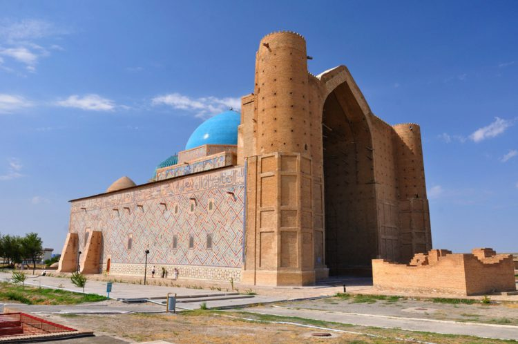

В числе прочих достопримечательностей гиды в Казахстане рекомендуют посетить эту важнейшую святыню на бескрайних степях Южного Казахстана.
Мавзолей был построен в честь известного поэта Ахмеда Ясави в 1405 году в том месте, где ранее располагалась его скромная могила.
Со временем этот архитектурный ансамбль объединил в себе самые разные помещения - усыпальницу, мечеть, библиотеку,
пантеон казахских ханов с 43 надгробиями, баню и различные вспомогательные помещения..
Главная страница
Главное меню